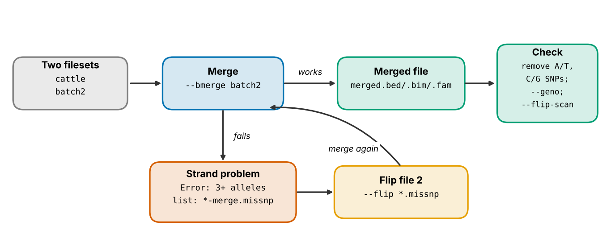

5 Converting, subsetting and merging data
Most of a genomics project is plumbing: getting files into the right format, cutting out the animals or SNPs you need, and joining data from different labs. PLINK does all of this, and doing it carefully here saves weeks of confusion later.
5.1 Step 1: convert text to binary
plink --file cattle --cow --make-bed --out cattleScanning .ped file... done.
Performing single-pass .bed write (4800 variants, 361 cattle).
361 cattle (137 males, 222 females, 2 ambiguous) loaded from .fam.
Warning: Ignoring phenotypes of missing-sex samples. If you don't want those
phenotypes to be ignored, use the --allow-no-sex flag.
Before main variant filters, 301 founders and 60 nonfounders present.
Warning: 9 het. haploid genotypes present (see cattle.hh ); many commands
treat these as missing.
Total genotyping rate is 0.992812.
4800 variants and 361 cattle pass filters and QC.
Among remaining phenotypes, 144 are cases and 217 are controls.Let us read this log line by line, because you will see these lines in every run.
- 137 males, 222 females, 2 ambiguous: “ambiguous” means sex code 0. Their IDs go to
cattle.nosex. - Ignoring phenotypes of missing-sex samples: PLINK 1.9 leaves those two animals out of association tests unless you add
--allow-no-sex. Chapter 17 shows the difference it makes. - 301 founders and 60 nonfounders: a founder has both parents unknown. Our 60 calves are nonfounders. Allele frequencies and Hardy-Weinberg tests use founders only, so that a sire’s alleles are not counted again in each of his calves.
- 9 het. haploid genotypes: a bull has one X chromosome, so he cannot be heterozygous on the X. When he looks heterozygous, it is a genotyping error (a few are normal) or a sex error (hundreds in one animal). The file
cattle.hhlists them. - Total genotyping rate is 0.992812: 99.3% of all genotype cells are filled in.
5.2 Step 2: write other formats when another program asks for them
PLINK can write the same genotypes in many layouts. Each one below was made from our binary file with one command of the form plink --bfile cattle --cow <format flag> --out <name>, and each example shows the first lines of what it wrote. Look at your own file the same way (head) before you send it to another program.
| Format flag | Files written | Size here | Typical user |
|---|---|---|---|
--make-bed |
.bed .bim .fam |
0.44 MB | PLINK, GCTA, ADMIXTURE, most tools |
--recode |
.ped .map |
6.9 MB | Older programs; easy to read |
--recode 12 |
.ped .map with 1/2 instead of letters |
6.9 MB | Programs that cannot read letters |
--recode A |
.raw |
3.5 MB | R, Python, genomic prediction |
--recode AD |
.raw with extra heterozygote columns |
7.1 MB | Models with dominance |
--recode transpose |
.tped .tfam |
7.1 MB | Programs that read one SNP per line |
--recode vcf-iid |
.vcf |
7.1 MB | BEAGLE, bcftools, imputation |
5.2.1 --recode: back to text
plink --bfile cattle --cow --recode --out cattle_text
head -2 cattle_text.ped | cut -d" " -f1-12ANG ANG_001 0 0 2 1 A A A A T T
ANG ANG_002 0 0 1 2 A A A A T TSix columns about the animal, then two letters per SNP: ANG_001 is A/A at snp00001, A/A at snp00002 and T/T at snp00003. The .map file lists the SNPs in the same order. Use this only when a program needs it: the file is 16 times larger than the .bed.
5.2.2 --recode 12: numbers instead of letters
plink --bfile cattle --cow --recode 12 --out cattle_12ANG ANG_001 0 0 2 1 2 2 2 2 2 2Here 1 = A1 and 2 = A2 of the .bim file, not “allele 1 and 2 of the chip”. For snp00001 the .bim says A1 = G, A2 = A, so ANG_001’s A/A became 2 2. Missing is still 0 0. Because A1 is the minor allele in PLINK 1.9, the same letter can be 1 in one file and 2 in another file made from different animals. Add --keep-allele-order if a program needs a stable coding.
5.2.3 --recode A: one number per genotype
plink --bfile cattle --cow --recode A --out cattle_add
head -3 cattle_add.raw | cut -d" " -f1-10FID IID PAT MAT SEX PHENOTYPE snp00001_G snp00002_C snp00003_A snp00004_T
ANG ANG_001 0 0 2 1 0 0 0 1
ANG ANG_002 0 0 1 2 0 0 0 0Each column header is the SNP name, an underscore and the allele being counted (A1). ANG_001 has 0 copies of G at snp00001 and 1 copy of T at snp00004. Missing genotypes are NA (12,456 of the 1.7 million cells here). Two cautions: the file holds every genotype as text, so for 50,000 SNPs and thousands of animals it gets large and slow to read in R; and if you combine .raw files made separately, check that the counted allele in the headers is the same, or force it with --recode-allele or --keep-allele-order. Add include-alt to name both alleles in the header (snp00001_G(/A)).
5.2.4 --recode AD: additive plus dominance
plink --bfile cattle --cow --recode AD --out cattle_adFID IID ... snp00001_G snp00001_HET snp00002_C snp00002_HET
ANG ANG_001 ... 0 0 0 0Each SNP now has two columns: the count of A1 (0, 1, 2) and a heterozygote indicator (1 for heterozygotes, 0 for both homozygotes). Use it when you fit a dominance effect yourself; the file is twice the size of --recode A.
5.2.5 --recode transpose: one SNP per line
plink --bfile cattle --cow --recode transpose --out cattle_t
head -1 cattle_t.tped | cut -d" " -f1-121 snp00001 0.484 484050 A A A A A A A AEach line is one SNP: the four .map columns, then two letters per animal in the order of the .tfam file (which is a copy of the .fam). Some older programs, and simple per-SNP scripts, prefer this layout.
5.2.6 --recode vcf-iid: VCF for other programs
plink --bfile cattle --cow --recode vcf-iid --out cattle_vcf
grep -v "^##" cattle_vcf.vcf | head -2 | cut -f1-12#CHROM POS ID REF ALT QUAL FILTER INFO FORMAT ANG_001 ANG_002 ANG_003
1 484050 snp00001 A G . . PR GT 0/0 0/0 0/0PLINK 1.9 writes A2 as REF and A1 as ALT. Since it does not know the genome’s real reference allele, it marks every line PR (provisional reference). Before imputation or merging with sequence data, set the true REF allele (Chapter 14 shows how). vcf-iid uses only the IID as the sample name; plain vcf would write ANG_ANG_001.
A VCF file has only one name per animal, so when PLINK reads a VCF back it tries to split that name at _ into FID and IID. Our names already contain underscores, which gives:
Error: Multiple instances of '_' in sample ID.The fix is to say how you want the IDs: --double-id (use the whole name as both FID and IID), --const-fid (FID = 0), or a different --id-delim. A VCF also has no sex or phenotype, so add them back with --update-sex and --pheno.
5.3 Step 3: keep or drop animals and SNPs
Every subsetting flag either reads a list file or takes a rule. The pattern is always the same: add the flag to a command that writes something, and read the line in the log that says how many animals or SNPs are left. Below, every example was run as
plink --bfile cattle --cow --allow-no-sex <flag> --make-bed --out <new name>and the result is the line PLINK wrote in the log.
5.3.1 Animals from a list: --keep, --remove, --keep-fam
An animal list has two columns, FID and IID, separated by spaces or tabs, one animal per line. Here we make the list of all N’Dama from the breed file:
awk '$3=="NDA" {print $1, $2}' breed.clst > nda.txt
head -3 nda.txt # NDA NDA_001 / NDA NDA_002 / NDA NDA_003 (140 lines)
plink --bfile cattle --cow --allow-no-sex --keep nda.txt --make-bed --out nda--keep: 140 cattle remaining.
Among remaining phenotypes, 16 are cases and 124 are controls.--remove nda.txt does the opposite (221 cattle remaining). --keep-fam reads a list of FIDs only and keeps whole families: a list of HOL_F01, HOL_F02 and NDA_F01 kept 12 animals (three families of sire, dam and two calves).
Things to check. Both IDs must match exactly, including capital letters, and an animal that is in the list but not in the data is skipped without a warning. A test list of three lines (NDA NDA_001, nda NDA_002 with a lower-case FID, and a made-up NDA NDA_999) gave --keep: 1 cow remaining. and no error. So always compare the number in the log with the number of lines in your list (here 140 and 140). A list with only the IID column does give an error: Line 1 of --keep file has fewer tokens than expected.
5.3.2 Animals by a group label: --filter
plink --bfile cattle --cow --allow-no-sex --filter breed.clst HOL --mfilter 1 --make-bed --out hol--filter: 141 cattle remaining.--filter reads a file with FID, IID and one or more value columns, and keeps the animals whose value equals the one you give (HOL). --mfilter 1 says which value column to use: 1 is the first column after FID and IID. Without --mfilter, PLINK uses that first column anyway. This is handy when you keep breed, herd or batch in one table and want to pick one level without making a separate list.
5.3.3 Animals by status: --filter-females, --filter-cases, --filter-founders
| Flag | Log line in our data |
|---|---|
--filter-females |
139 cattle removed due to gender filter (222 left; the 137 males and the 2 unknowns go) |
--filter-males |
keeps the 137 males |
--filter-cases / --filter-controls |
217 cattle removed due to case/control status (144 cases left) |
--filter-founders / --filter-nonfounders |
60 cattle removed due to founder status (301 founders left) |
These read the .fam file, so they are only as good as the recorded sexes, phenotypes and parents. Animals with unknown sex are removed by both sex filters.
5.3.4 SNPs from a list: --extract, --exclude
A SNP list has one column: the SNP names exactly as in the .bim.
awk '$1 == 6 {print $2}' cattle.bim > chr6_snps.txt # 210 SNP names
plink --bfile cattle --cow --allow-no-sex --extract chr6_snps.txt --make-bed --out chr6--extract: 210 variants remaining.--exclude chr6_snps.txt left 4,590. Names that are not in the data are ignored without a warning, so compare counts again. With --extract range file.txt the file holds regions instead (chromosome, start, end, name).
5.3.5 SNPs by position: --chr, --from-mb, --to-mb, --snp, --window, --autosome
| Command (added to the template above) | SNPs left | What it selects |
|---|---|---|
--chr 14 --from-mb 23 --to-mb 27 |
86 | Chromosome 14 from 23 to 27 Mb (also --from-kb, --from-bp) |
--chr 1-5,X |
1,060 | A range of chromosomes plus the X |
--autosome |
4,550 | Chromosomes 1 to 29 only (no X, Y, MT) |
--snp snp02145 --window 500 |
14 | One SNP and everything within 500 kb on either side |
--snps snp00001-snp00010 |
10 | A run of SNPs by name, in file order |
Position flags read the chromosome and base-pair columns of the .bim, so they depend on the genome assembly the positions come from.
5.3.6 Random SNPs: --thin, --thin-count
plink --bfile cattle --cow --allow-no-sex --thin 0.25 --seed 7 --make-bed --out thin25
plink --bfile cattle --cow --allow-no-sex --thin-count 1000 --seed 7 --make-bed --out thin1000--thin: 3598 variants removed (1202 remaining).
--thin-count: 3800 variants removed (1000 remaining).--thin 0.25 keeps each SNP with probability 0.25, so you get about a quarter (1,202 of 4,800); --thin-count 1000 keeps exactly 1,000. Without --seed, PLINK takes its seed from the computer’s clock and writes it in the log (Random number seed: 1794946461), so two runs a few seconds apart pick different SNPs. Set --seed and the same command always gives the same SNPs. Random thinning ignores LD; for analyses that need roughly independent SNPs, prune instead (Chapter 9).
Two habits worth forming: keep your list files, because they are the exact record of what you did, and read the “remaining” line of the log every time.
5.4 Step 4: merge files from two labs
Merging adds new animals as rows and new SNPs as columns. The classic trap is the DNA strand. DNA has two strands that pair A with T and C with G. If one lab reports a SNP as A/G and the other reads the opposite strand, it reports T/C for the same SNP, and PLINK sees four alleles.

--flip is usually needed once; the checks at the end are always needed.
The whole workflow as commands (each step is explained below):
# 1. try the merge
plink --bfile cattle --cow --allow-no-sex --bmerge batch2 --make-bed --out merged_try1
# 2. it stopped with "3+ alleles": flip the listed SNPs in the second file
plink --bfile batch2 --cow --flip merged_try1-merge.missnp --make-bed --out batch2_flipped
# 3. merge again
plink --bfile cattle --cow --allow-no-sex --bmerge batch2_flipped --make-bed --out merged
# 4. checks: drop strand-ambiguous SNPs, drop SNPs missing in one lab, look for remaining flips
awk '($5=="A"&&$6=="T")||($5=="T"&&$6=="A")||($5=="C"&&$6=="G")||($5=="G"&&$6=="C"){print $2}' merged.bim > ambiguous.txt
plink --bfile merged --cow --allow-no-sex --exclude ambiguous.txt --geno 0.05 --make-bed --out merged_clean
plink --bfile merged_clean --cow --allow-no-sex --flip-scan --out fscanstep 1: Error: 39 variants with 3+ alleles present.
step 2: --flip: 39 SNPs flipped.
step 3: 4920 variants and 401 cattle pass filters and QC.
step 4: 177 ambiguous SNPs; --exclude: 4743 variants remaining.
816 variants removed due to missing genotype data (--geno).
3927 variants and 401 cattle pass filters and QC.
--flip-scan: 10 variants with at least one negative LD match.The --geno 0.05 in step 4 removed 816 SNPs. That is not a quality problem: those are the SNPs on only one lab’s chip (720 typed only by the first lab and 120 only by the second, minus the few already removed as ambiguous), which are missing for every animal of the other lab. Whether to keep them is a decision: drop them for analyses that need the same SNPs in every animal (PCA, relatedness, GRM), or keep them and impute (Chapter 14).
Our second lab sent 40 animals and 4,200 SNPs, with 40 SNPs on the opposite strand:
plink --bfile cattle --cow --allow-no-sex --bmerge batch2 --make-bed --out merged_try140 cattle to be merged from batch2.fam.
Of these, 40 are new, while 0 are present in the base dataset.
4200 markers to be merged from batch2.bim.
Of these, 120 are new, while 4080 are present in the base dataset.
Error: 39 variants with 3+ alleles present.
* If you believe this is due to strand inconsistency, try --flip with
merged_try1-merge.missnp.Flip those SNPs in the second file and merge again:
plink --bfile batch2 --cow --flip merged_try1-merge.missnp --make-bed --out batch2_flipped
plink --bfile cattle --cow --allow-no-sex --bmerge batch2_flipped --make-bed --out merged
# 4920 variants and 401 cattle pass filters and QC.PLINK caught 39 of the 40. The missing one, snp03921, is a C/G SNP: flipping C/G gives G/C, the same two letters, so no error is raised and the alleles are silently swapped. A/T SNPs behave the same way. That is why the safe practice is:
Remove strand-ambiguous SNPs (A/T and C/G) before merging data from different sources. Our file had 143 of them:
awk '($5=="A"&&$6=="T")||($5=="T"&&$6=="A")||($5=="C"&&$6=="G")||($5=="G"&&$6=="C"){print $2}' cattle.bim > ambiguous.txtBetter still, ask both labs to export with the same allele coding (Illumina TOP or Forward strand).
Run
--flip-scan, which looks for SNPs whose LD with their neighbours has the wrong sign. It needs strong LD, so on our sparse SNPs it flagged 6 SNPs and missed snp03921. It is useful on dense chips.
Two more things the merge taught us. Without --allow-no-sex, PLINK refused to write the merged file because two animals had unknown sex. And SNPs typed by only one lab are missing for every animal of the other lab, so run --geno (Chapter 6) after every merge.
5.4.1 Comparing the same animals genotyped twice: --merge-mode
When the same animal is in both files, --merge-mode decides what to do with disagreements. Mode 6 does not merge at all; it reports every disagreement. We re-genotyped 10 Angus animals:
plink --bfile cattle --cow --allow-no-sex --bmerge regeno --merge-mode 6 --out mm6
# 48000 overlapping calls, 47754 nonmissing in both filesets.
# 47650 concordant, for a concordance rate of 0.996904.| Mode | What happens to a disagreement |
|---|---|
| 1 (default) | Set to missing |
| 2 | Only fill in genotypes missing in the first file |
| 3 | Take the second file’s genotype unless it is missing |
| 4 / 5 | Never / always overwrite |
| 6 / 7 | Report disagreements only (7 ignores those involving a missing call) |
5.4.2 Many files at once
printf "part2\npart3\n" > mergelist.txt
plink --bfile part1 --cow --allow-no-sex --merge-list mergelist.txt --make-bed --out rejoined5.5 Step 5: fix IDs, sexes, SNP names and alleles
Each update flag reads a small text file and changes the .fam or .bim in the new fileset. The log says how many entries were changed; compare it with the number of lines in your file. Run each update in its own command, because some cannot be combined (--update-parents cannot be used with --update-ids).
5.5.1 Sexes: --update-sex
Chapter 8 shows that ANG_071 and NDA_022 are bulls recorded as cows. The file has three columns: FID, IID and the new sex code (1 male, 2 female, 0 unknown).
printf "ANG ANG_071 1\nNDA NDA_022 1\n" > sex_fix.txt
plink --bfile cattle --cow --update-sex sex_fix.txt --make-bed --out cattle_sexfix
grep -E "ANG_071|NDA_022" cattle.fam cattle_sexfix.fam--update-sex: 2 cattle updated.
cattle.fam:ANG ANG_071 0 0 2 1
cattle_sexfix.fam:ANG ANG_071 0 0 1 15.5.2 Animal IDs: --update-ids
Four columns: old FID, old IID, new FID, new IID. Useful when a lab used its own sample codes and you want herd-book numbers.
printf "ANG ANG_001 ANG BULL_DE_001\n" > new_ids.txt
plink --bfile cattle --cow --update-ids new_ids.txt --make-bed --out cattle_ids--update-ids: 1 cow updated.Only the .fam changes; pedigree columns that pointed to the old ID are not updated, so rename parents’ IDs in the children’s lines too (with --update-parents).
5.5.3 Parents: --update-parents
Four columns: FID, IID, sire ID, dam ID. In PLINK a parent must have the same FID as its calf. Chapter 10 finds that the true sire of HOL_F03_C2 is HOL_011, who is in family HOL. If you simply point the calf at HOL_011, PLINK finds no animal of that name in family HOL_F03:
printf "HOL_F03 HOL_F03_C2 HOL_011 HOL_F03_D\n" > new_parents.txt
plink --bfile cattle --cow --update-parents new_parents.txt --make-bed --out try1
plink --bfile try1 --cow --mendel --out try1_mendel--update-parents: 1 cow updated.
--me/--mendel: 343 Mendel errors detected. (877 before)The errors did not fall because the pedigree is now right: they fell because PLINK can no longer find the sire, so it stopped checking that calf at all (877 − 343 = 534, exactly the calf’s errors). The correct fix moves the sire into the family first, then updates the parents:
printf "HOL HOL_011 HOL_F03 HOL_011\n" > move_sire.txt
plink --bfile cattle --cow --update-ids move_sire.txt --make-bed --out fixA
plink --bfile fixA --cow --update-parents new_parents.txt --make-bed --out fixB
plink --bfile fixB --cow --mendel --out fixB_mendel
grep HOL_F03 fixB_mendel.fmendel--me/--mendel: 346 Mendel errors detected.
HOL_F03 HOL_F03_S HOL_F03_D 1 2
HOL_F03 HOL_011 HOL_F03_D 1 3Now the calf is checked against its real sire and has only 3 errors, which is normal. Moving HOL_011 into family HOL_F03 also takes him out of family HOL; that only matters for commands that use FID, such as --within without a cluster file.
5.5.4 SNP names and positions: --update-name, --update-map
Two columns each: old name and new name, or SNP name and new base-pair position.
printf "snp00001 BTA1_484050\nsnp00002 BTA1_2223660\n" > new_names.txt
plink --bfile cattle --cow --update-name new_names.txt --make-bed --out cattle_names
printf "snp00001 500000\n" > new_pos.txt
plink --bfile cattle --cow --update-map new_pos.txt --make-bed --out cattle_pos--update-name: 2 values updated. 1 BTA1_484050 0.484 484050 G A
--update-map: 1 value updated. 1 snp00001 0.484 500000 G AThe usual reason is moving a file to a new genome assembly (for cattle, from UMD3.1 to ARS-UCD1.2): you need a table of old name and new position from the chip maker. PLINK does not re-sort the SNPs after --update-map, and SNPs that moved to another chromosome need --update-chr as well. Rewrite the files with --make-bed and check that positions increase along each chromosome.
5.5.5 Which allele is A1: --a1-allele, --keep-allele-order
--a1-allele file 2 1 reads the allele from column 2 and the SNP name from column 1, and makes that allele A1. Here we set A1 to the current A2 for every SNP:
awk '{print $2, $6}' cattle.bim > a2_as_a1.txt
plink --bfile cattle --cow --a1-allele a2_as_a1.txt 2 1 --make-bed --out cattle_swapped
head -1 cattle.bim cattle_swapped.bim--a1-allele: 4800 assignments made.
cattle.bim: 1 snp00001 0.484 484050 G A
cattle_swapped.bim: 1 snp00001 0.484 484050 A GThe genotypes are the same; only the allele being counted changes, so every BETA and log(OR) changes sign and every OR becomes its inverse. The usual reason is to make A1 match a reference (for example the ALT allele of a sequence panel). --keep-allele-order simply stops PLINK from re-choosing A1 as the minor allele in each new file. --indiv-sort f order.txt puts the animals in the order of a file (FID IID per line), which some programs expect.
The .pgen format is even smaller (0.35 MB for our data). --recode becomes --export (--export A, --export vcf bgz), --bmerge becomes --pmerge, and --flip stops with an error if a listed variant is not a SNP (an insertion or deletion) unless you add permissive. It flips A/T and C/G SNPs without complaint, exactly like PLINK 1.9, so remove those before merging in either version.
plink2 --bfile cattle --cow --make-pgen --out cattle
plink2 --pfile cattle --cow --export vcf bgz --out cattle